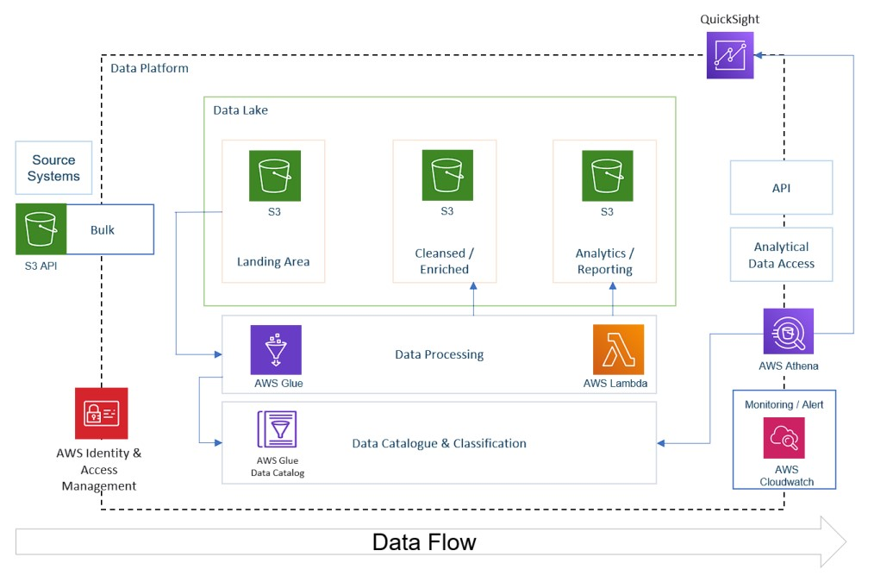
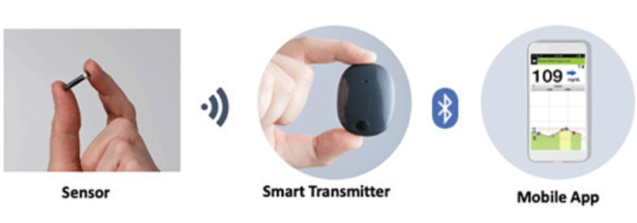
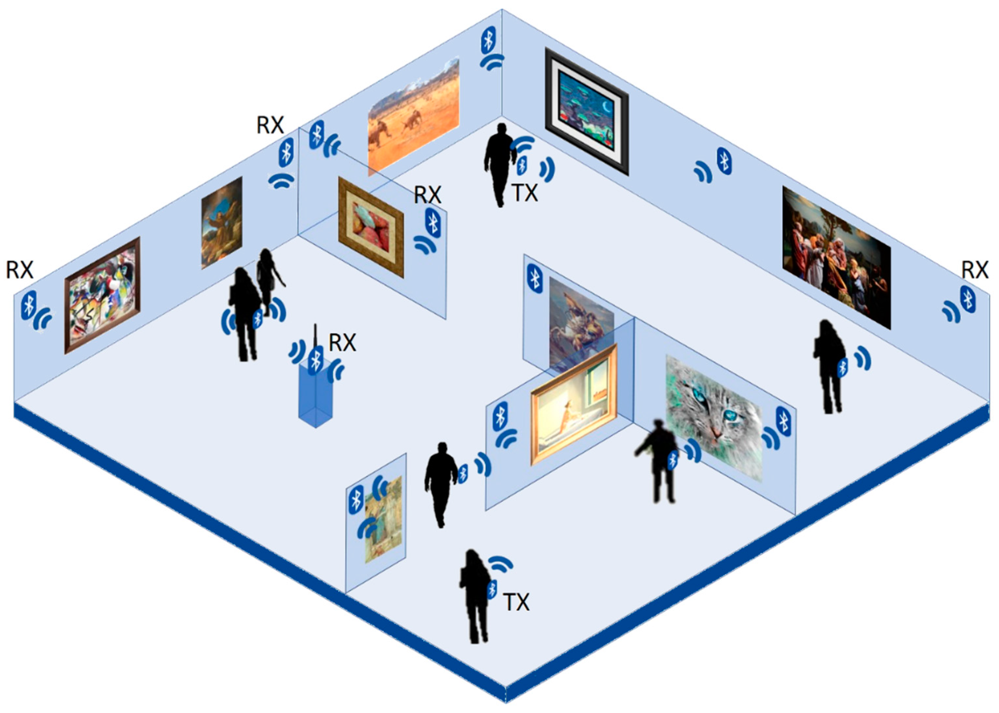
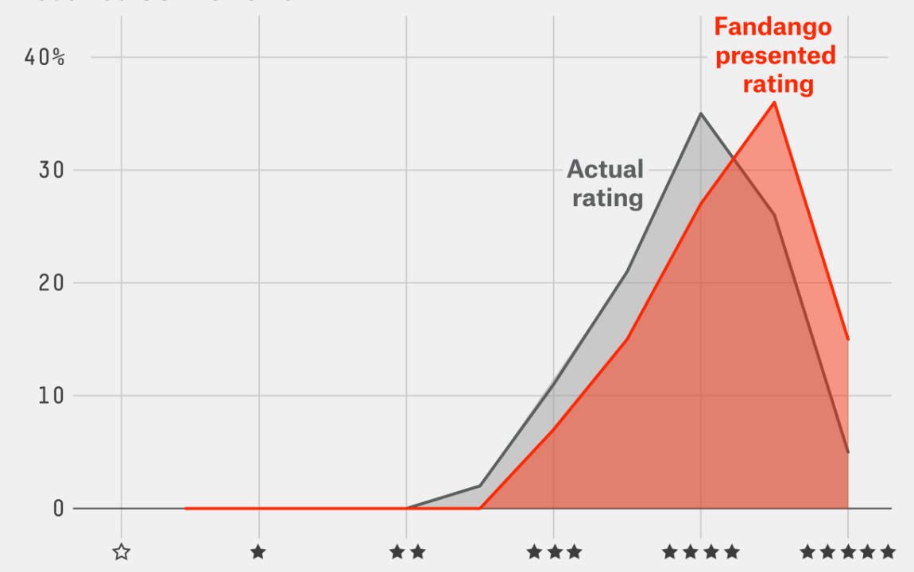

I am highly passionate to work in the IOT & Data Science domain and create predictive end to end data science models from feature engineering and selection to deployment on cloud platforms.
The amalgamation of IOT with Data Science can help in creating advanced predictive solutions that can be made available for the common man especially in healthcare sector and promote remote patient monitoring and simplify the entire procedure of treatment
while also reducing costs.
I have strong scripting and architecture design experience on Python with complete framework development. Efficient in wireless data packets sniffing and decoding the frames to analyze the issue. Strong troubleshooting experience for RCA(Root cause Analysis) and reproducing the product issues/application bugs.
Hands on different wireless/IOT protocols like ZigBee, BLE (Bluetooth Low Energy- GATT and GAP protocols, L2CAP, LE Secure, LE Audio Profiles) , UWB (Ultra-Wide Band) , MQTT, TCP/IP, etc. for projects related to IOT healthcare domain, indoor localization, smart building automation, etc.

Domain: Recommendation System, Machine Learning, Data Analytics
Tech stack: Python, sklearn, pandas, matplotlib, scipy, numpy, pickle
Dataset: Transactional data set containing the transactions for a UK-based non-store online retail
Contribution: ● Data cleaning ● Memory-based approach: User-to-User, Item-to-Item ● Models: KNN model, Non-negative Matrix Factorization (NMF), Co-Clustering model ● Evaluation metrics: Root mean square error, Mean absolute error, Cross-validation score

Domain: Big Data Analytics
Tech stack: SQL, Python, AWS S3, AWS Glue, QuickSight, AWS Lambda, AWS Athena, AWS IAM
Dataset: This Kaggle dataset contains statistics (CSV files) on daily popular YouTube videos over the course of many months. There are up to 200 trending videos published every day for many locations.
Contribution: ● Understanding ETL on Big Data ● Introduction to Staging and Data Lake ● Creating IAM Roles and Policies ● Creating Lambda Functions ● Setting up Glue Jobs for ETL ● Using Glue Crawler and Glue Studio ● Creating Glue Data Catalog ● Converting JSON to Parquet format ● Performing Data Transformations and Joins ● Visualizing in QuickSight

Domain: Healthcare IOT, Data Analytics
Tech stack: Python, Automation, Bluetooth Low Energy-GATT, GAP, L2CAP
Company: Capgemini Pune India (Client: Dexcom San Diego)
Contribution: ● Automation Framework Development for BLE packets/Logs post processing in medical/IOT domain for Continuous Glucose Monitoring System (CGMS). Data Analysis & Visualization of results in Python.
● BLE RSSI pattern analysis when BLE based CGMS Transmitters are attached to body (Human body shadowing effect) to understand its effect on issues like BLE connection drops, packet loss, etc.
Domain: Machine Learning
Tech stack: R, AWS, IOT, Zigbee
Dataset: Data used include measurements of temperature and humidity sensors from ZigBee based wireless sensor network.
Contribution: ● Importing Dataset directly from AWS ● Using the summary function in R and interpreting its result ●Visualizing and understanding density plot,
plotting box plot and whiskers plot for visualizing outliers, visualizing in ggplot and Barplot ● Applying Gradient Boosting Model for training ● Applying SVM using different Kernels
● Selecting best evaluation metrics, using Grid Search CV to extract the best features ● Visualizing in QuickSight

Domain: IOT, Data Analytics
Tech stack: Python, Embedded C, Bluetooth Low Energy
Company: L&T Technology Services, Mysuru, India
Contribution: ●Using BLE RSSI Filtering Techniques like Kalman Filter, Moving Average, etc. to stabilize the accuracy of indoor localization
● Developing Custom GATT Characteristics for designing BLE beacons and scanners, developed Trilateration Algorithm for indoor positioning.

Domain: Exploratory Data Analytics
Tech stack: Python, Pandas, Seaborn, Matplotlib, Numpy
Dataset: "all_sites_scores.csv" from Kaggle contains every film that has a Rotten Tomatoes rating, a RT User rating, a Metacritic score, a Metacritic User score, and IMDb score, and at least 30 fan reviews on Fandango.
Contribution: ● EDA and Visualization of dataset, plotting various plots using histplot, barplot, etc. ● Analysis at the end proves that Fandago increased movie ratings when compared with other movie sites